De … største af temaets … selskaberTemaets … selskaber
Tryk på et selskab for at se mere om det.
Vis alle … selskaber i temaet
Andele i PMINDI, den udgave af fonden, der udbetaler udbytte, pr. … (fondens data).
Et af de … temaer i NewDeal Invest
Hvad er demonstreret, og hvad er faktisk en forretning?
Selskaberne bygger ikke den samme slags kvantecomputer. Sammenlign de tekniske spor, og hold forskellen mellem et forskningsresultat, et produkt og selskabets omsætning for øje.
… %
af PMINDI er placeret i temaet Kvantecomputere.
Andele i PMINDI, den udgave af fonden, der udbetaler udbytte, pr. … (fondens data).
De … temaer efter størrelse. Kvante er nr. ….
Det har vi skrevet
Ordret uddrag af NewDeal Invests egne ugebreve og indlæg om temaet, med dato og link til hele teksten. Det er ikke en anbefaling.
»Mandag aften præsenterede virksomheden sin nye Willow-chip, et vigtigt gennembrud inden for kvantecomputing. Willow kan foretage beregninger på få minutter, som vil tage vores kraftigste computere i dag længere end universet har eksisteret.«
Nævner: Alphabet
Læs hele teksten på bloggen (åbner i nyt vindue)Sporskiftet
Selskaberne i fonden bygger kvantecomputeren på hver deres måde. Tegningen viser sporene. Jo bredere et spor er, jo mere fylder det i fonden. Ingen af sporene er nået frem til en fuldt funktionel kvantecomputer.
En qubit er kvantecomputerens udgave af en bit, den mindste enhed for data i en computer. En bit er altid 0 eller 1, mens en qubit kan være en kombination af 0 og 1, indtil man måler den.En qubit er kvantecomputerens bit. Den kan være en kombination af 0 og 1, til den måles.
Atomer med elektrisk ladning holdes svævende i et vakuumkammer, en beholder uden luft, og styres med laserlys. Ifølge NIST kan de holde på deres kvantetilstand længe, altså den sarte tilstand, som beregningen bygger på, men de regner forholdsvis langsomt. Det er det eneste spor med to selskaber.
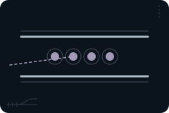
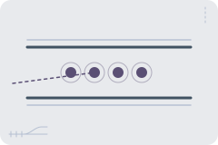
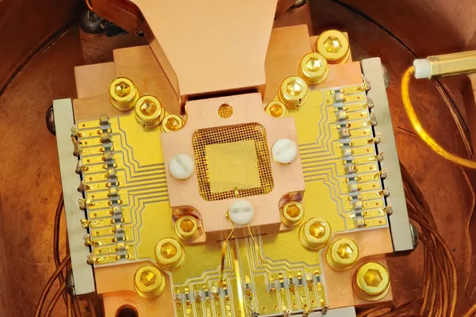
Se efter: Hvilket teknisk resultat er vist, og hvilke begrænsninger følger med?
Tryk på et selskab for at se, hvad det laver.
Qubitten er en enkelt lyspartikel, en foton. Selskabet arbejder ved almindelig stuetemperatur.

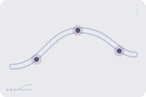
Tryk på et selskab for at se, hvad det laver.
Annealing er en anden type kvantemaskine, der er rettet mod bestemte opgaver, fx at finde den bedste af mange kombinationer. Selskabet bygger også den almindelige type kvantecomputer.

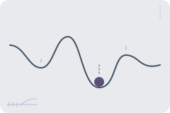
Tryk på et selskab for at se, hvad det laver.
Atomer uden elektrisk ladning holdes fast med laserlys i et vakuumkammer. Selskabet laver også kvantesensorer, meget følsomme måleinstrumenter.

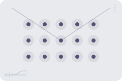
Tryk på et selskab for at se, hvad det laver.
Ifølge NIST regner de hurtigt, men deres kvantetilstand er mere skrøbelig end ionernes. Om chipfremstilling kan du læse på siden Chips og halvledere.

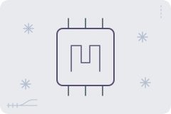
Tryk på et selskab for at se, hvad det laver.
Oxford Instruments laver mikroskoper og andre instrumenter. I januar 2026 afhændede selskabet NanoScience, den del af forretningen, der var rettet mod kvante.
Tryk på et selskab for at se, hvad det laver.
Selskaberne i temaet: Oxford Instruments, Quantinuum, IonQ, Quantum Computing Inc, D-Wave Quantum, Infleqtion og Rigetti Computing. Ingen selskaber i fondens andre temaer hører også delvis til dette tema.
Forklaret
En kvantecomputer bygger på kvantefysik, altså de regler, der gælder for de mindste dele af naturen, fx atomer og lys. Dens byggesten hedder qubits. Hvad en qubit er, kan du læse ved knappen „Qubit“ i tegningen af sporene.
Nej, selv om det ofte bliver sagt. Når man måler resultatet, får man kun en lille del af oplysningerne ud.
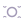
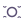
Kvantecomputere er meget sarte. Et lille elektrisk felt eller en ændring i temperaturen kan ødelægge en beregning. En almindelig computer laver omkring én fejl pr. milliard milliarder beregninger. Derfor bruger forskerne meget arbejde på at rette fejlene.
Kvantecomputeren skal ikke afløse den almindelige computer. Ifølge NIST kan de to arbejde sammen. NIST skriver også, at ingen af de tidlige forsøg har vist sig at være virkelig nyttige.
Kilde: NIST, “Quantum Computing Explained” (åbner i nyt vindue), 2025, opdateret 2026.
Se efter: Hvilket teknisk resultat er vist, og hvilke begrænsninger følger med?
Penge
 Omsætning 2025
Omsætning 2025
omsatte de seks selskaber, der bygger kvantecomputere, for tilsammen i 2025. Tallet er al deres omsætning, ikke kun den del, der kommer fra kvante.
Kilder: selskabernes regnskaber (se Kilder), omregnet med Nationalbankens kurs for 2025 (Danmarks Statistik, DNVALA (åbner i nyt vindue)).
 Lovet, ikke udbetalt
Lovet, ikke udbetalt
har den amerikanske regering i 2026 givet tilsagn om til tre af selskaberne og stillet i udsigt til et fjerde.
D-Wave Quantum, Quantinuum og Rigetti Computing fik endeligt tilsagn 08.09.2026. Infleqtion har kun et foreløbigt løfte (en hensigtserklæring) fra 21.05.2026.
Kilder: NIST, hensigtserklæringer 21.05.2026 (åbner i nyt vindue). Endelige tilsagn: D-Wave (åbner i nyt vindue), Quantinuum (åbner i nyt vindue) og Rigetti (åbner i nyt vindue).
Set udefra
Her er udvalgte opslag og videoer fra medier og forskningsinstitutioner. De er ikke fondens holdning.
New Scientist @newscientist · på engelsk
Kort fortalt Ifølge New Scientist har selskabet Quantinuum præsenteret en metode, der sætter rekord i at reducere fejl i logiske qubits, altså grupper af qubits, der sammen retter hinandens fejl.
Hvad skal du lægge mærke til? Læs opslaget sammen med afsnittet om fangede ioner. Hvilket teknisk resultat er vist, og hvilke begrænsninger følger med?
Nyhed om kvanteforskning
New Scientist @newscientist · på engelsk
Kort fortalt Ifølge New Scientist viser et forsøg fra Googles ingeniører en mere effektiv måde at fejlsikre de vigtigste operationer i en kvantecomputer på. New Scientist skriver, at sådan fejlsikring ellers kræver mange ressourcer.
Hvad skal du lægge mærke til? Læs opslaget sammen med afsnittet om nyhed om kvanteforskning. Hvilket teknisk resultat er vist, og hvilke begrænsninger følger med?
Google (Alphabet) er ikke blandt fondens selskaber.
Nyhed om kvanteforskning
Phys.org @physorg_com · på engelsk
Kort fortalt Phys.org skriver, at det er langt længere end de millisekunder, som de qubits, der forbinder netværket, holder.
Hvad skal du lægge mærke til? Læs opslaget sammen med afsnittet om nyhed om kvanteforskning. Hvilket teknisk resultat er vist, og hvilke begrænsninger følger med?
Nyhed om kvanteforskning
Phys.org @physorg_com · på engelsk
Kort fortalt Ifølge RIKEN begrænser det de fejl, der normalt opstår, når flere qubits styres på én gang.
Hvad skal du lægge mærke til? Læs opslaget sammen med afsnittet om nyhed om kvanteforskning. Hvilket teknisk resultat er vist, og hvilke begrænsninger følger med?
Oprindelig kilde: RIKENs pressemeddelelse (riken.jp) (åbner i nyt vindue). Forskningen er offentliggjort i Nature Physics, doi.org/10.1038/s41567-026-03466-2 (åbner i nyt vindue).
Opslagene er udvalgt af teamet bag NewDeal Invest. Afsenderne og de nævnte selskaber står ikke bag denne side, og opslagene er ikke fondens vurdering.
Se efter: Hvilket teknisk resultat er vist, og hvilke begrænsninger følger med?
Tryk på et selskab for at se mere om det.
Andele i PMINDI, den udgave af fonden, der udbetaler udbytte, pr. … (fondens data).
Udvalgte offentlige opslag om selskaberne i temaet. Opslagene er andres og ikke NewDeal Invests holdning.
Henter opslag …
Videre

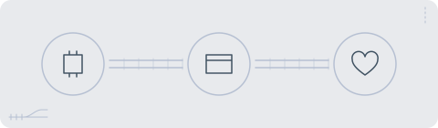